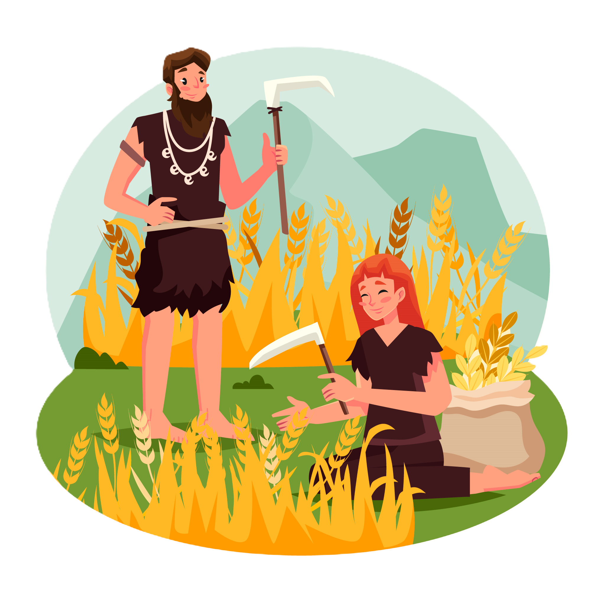
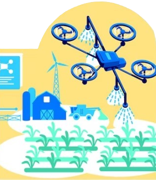
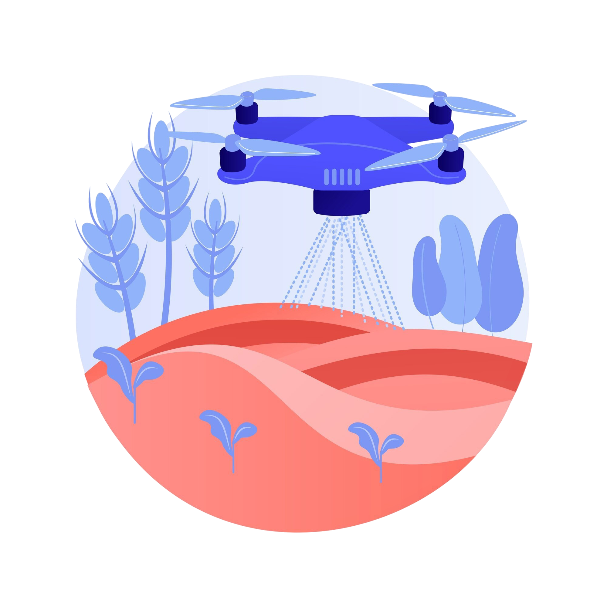

A Evolução Tecnológica no Campo
Se pararmos para pensar no avanço que alcançamos na agricultura, desde as técnicas primitivas e o uso de animais no Período Neolítico, ao uso de drones e máquinas automatizadas nos dias atuais, percebemos o quanto que a tecnologia é importante na agricultura, pois essa evolução não só aumentou a produtividade e reduziu custos, como também aproximou os produtores rurais dos consumidores urbanos, criando uma conexão direta entre o campo e a cidade.


Hoje o agricultor moderno com o auxílio de ferramentas digitais, consegue monitorar suas plantações, otimizar o uso de recursos e garantir que produtos de alta qualidade cheguem às mesas das famílias nas cidades. Sensores inteligentes, aplicativos móveis e plataformas digitais estão revolucionando a forma como produzimos, distribuímos e consumimos alimentos.
Impacto da Tecnologia Agrícola
15,1%
Crescimento do setor agropecuário em 2023
+50%
Produtores adotando agricultura digital
+30%
Potencial de economia com tecnologias de precisão
Agricultura de Precisão

A agricultura de precisão representa uma das mais significativas inovações tecnológicas do setor agrícola moderno. Utilizando ferramentas como GPS, sensores, drones e softwares especializados, ela permite o monitoramento detalhado da lavoura, aplicando insumos e recursos apenas onde são realmente necessários.
Com o apoio de mapas georreferenciados e análises em tempo real, os produtores identificam variações no solo, otimizam irrigação e aumentam a produtividade com menos impacto ambiental. Segundo a Embrapa, essas práticas contribuem para a sustentabilidade e para a tomada de decisões mais eficientes nas atividades agrícolas.
Vantagens
A agricultura de precisão não apenas beneficia os produtores rurais, mas também impacta diretamente a qualidade de vida nas cidades. Produtos cultivados com maior precisão e sustentabilidade chegam aos consumidores urbanos com melhor qualidade, menor presença de resíduos químicos e preços mais competitivos devido à maior eficiência produtiva, contribuindo para um sistema alimentar mais seguro e acessível.
O IBGE registrou um crescimento de 15,1% no setor agropecuário em 2023 — reflexo direto da adoção de tecnologias como essa. O Radar Agtech Brasil 2024 também aponta que mais da metade dos produtores brasileiros já adotam práticas digitais no campo.
Sustentabilidade Tecnológica
A sustentabilidade tecnológica na agricultura mostra como é possível unir produtividade e preservação ambiental. A integração de recursos como energia renovável, sensores inteligentes e manejo de solo avançado ajuda a reduzir impactos ambientais e fortalecer a produção responsável.
Energias Renováveis na Agricultura

Entre as soluções mais promissoras estão os sistemas de energia solar, biogás e agrovoltaicos — painéis solares instalados sobre áreas de cultivo. Esses sistemas permitem que produtores gerem sua própria energia limpa, reduzindo custos e aumentando a autonomia energética com baixo impacto ambiental.
De acordo com a Iberdrola, propriedades de médio porte podem suprir até 60% da demanda elétrica com sistemas agrovoltaicos, ampliando a sustentabilidade e a eficiência das fazendas.
Tecnologias de Conservação

Sensores de umidade, irrigação de precisão, rotação de culturas e drones para mapeamento são exemplos de ferramentas que conservam o solo, otimizam recursos hídricos e aumentam a resiliência das lavouras diante das mudanças climáticas. Essas inovações permitem o uso responsável dos recursos naturais, com monitoramento em tempo real que melhora o desempenho das plantações e reduz desperdícios — protegendo o campo e garantindo qualidade para quem está na cidade.
Benefícios para Campo e Cidade
Combinando inovação e respeito ambiental, a agricultura moderna promove ar mais limpo, água de melhor qualidade e alimentos mais saudáveis. Tecnologias sustentáveis permitem que o campo produza com equilíbrio, beneficiando diretamente a qualidade de vida nas cidades e reduzindo os impactos das cadeias produtivas.
Referências: Embrapa • Radar Agtech Brasil — Relatório 2024 • Iberdrola • Agricultura de Precisão • Crescimento da Agropecuária • Agricultura Digital